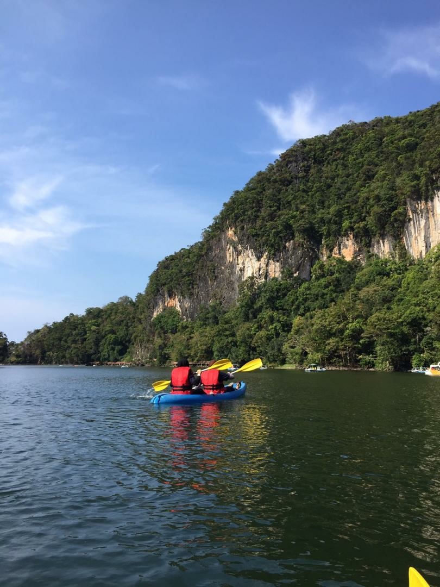
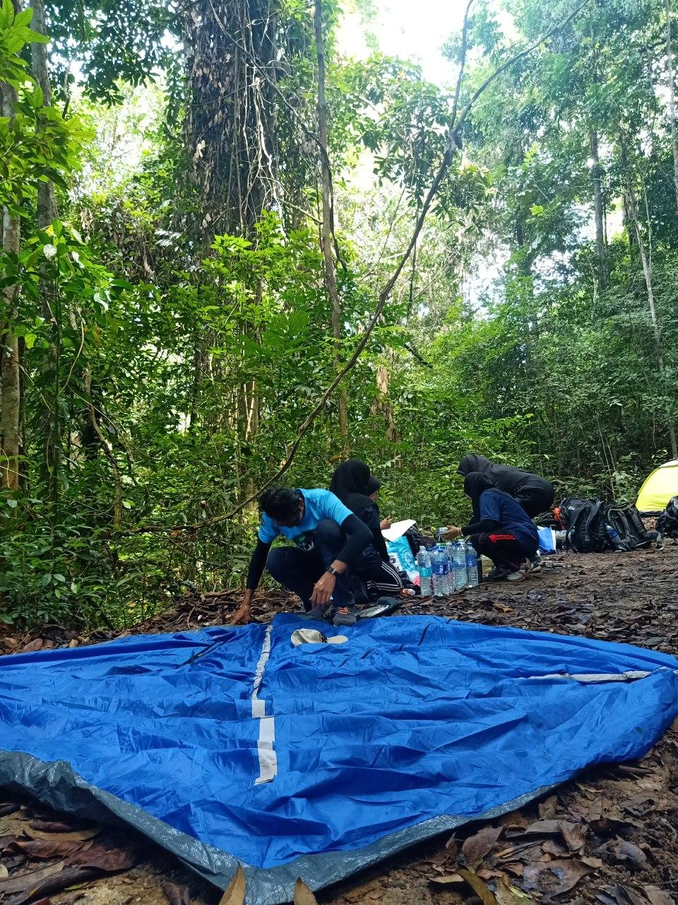
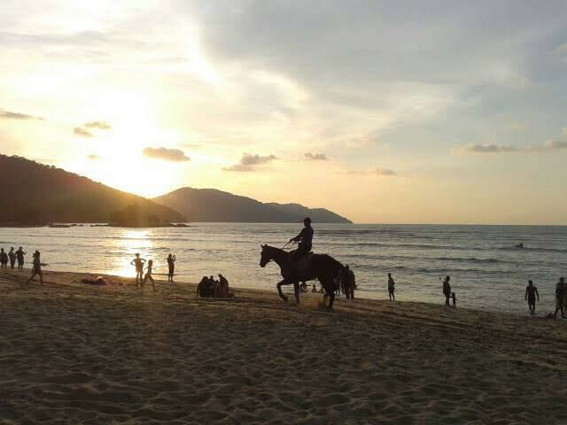
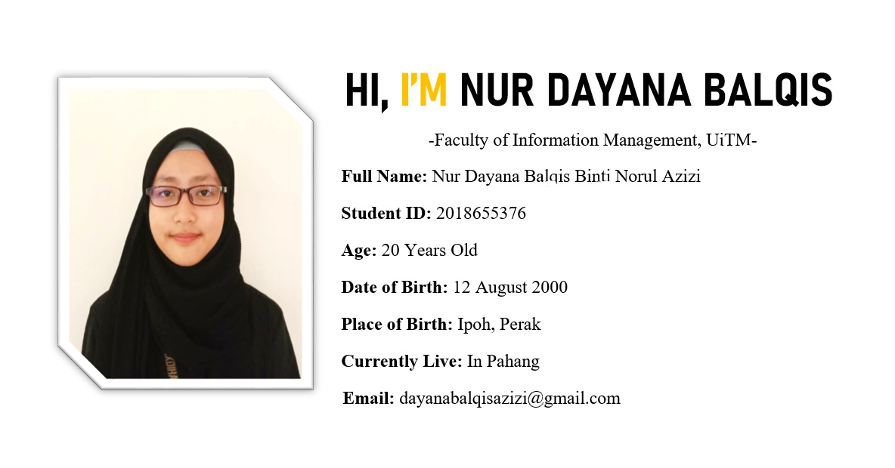
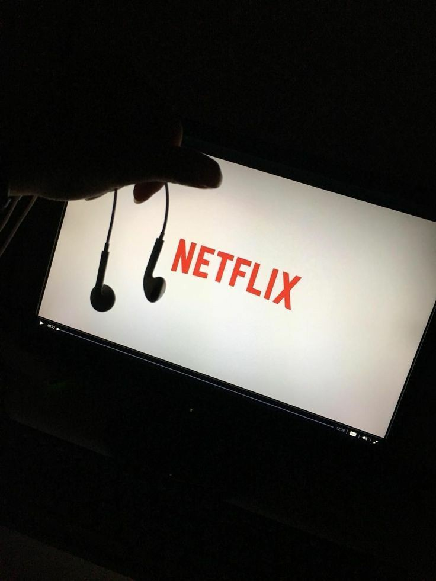
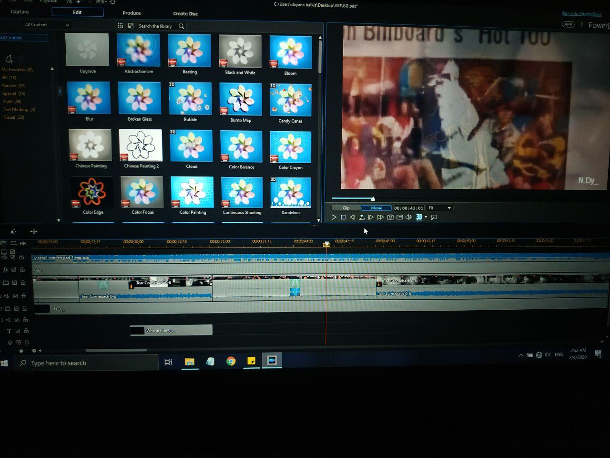
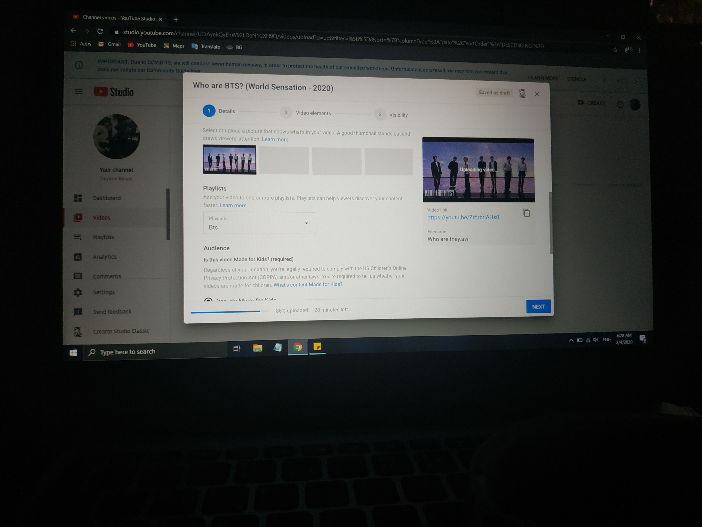

  

Hello folks, my name is Nur Dayana Balqis (nickname: Aqish). I am 20 years old student
of Library Management under the Faculty of Information Management.
Currently, I am in my last semester of diploma in University of Technology Mara in Kedah.
I am very enthusiastic and energetic person who always looking for a new experience and also a person who is positive about every aspect of life.
There are many things I like to do, to see, and to experiences.
What is more, I like to read, I like to write; I like to think, I like to dream; I like to talk, I like to listen. I like to see the sunrise in the morning,
I like to see the moonlight at night; I like to feel the music flowing on my face.
I like to look at the clouds in the sky with a blank mind, I like to do thought experiment when I cannot sleep in the middle of the night. I like to sleep early,
I like to get up late; I like to be alone, I like to be surrounded by people. I like country peacefulness, I like metropolis vibe; I like the beautiful lake in my university. I like delicious food and comfortable shoes; I like good books and romantic movies. I like the land and the nature, I like people. And, I like to laugh.
This is a brief introduction of myself. If you are interested in knowing more, go through my page and by the end of it you will know a lot about me.
More interesting facts about me! My Hobbies My Interests
Based on the pictures, My Hobbies are: Cyling, Kayaking, Camping and Horse Riding
  
Based on the pictures, My Interests are: Watching Movies, Editing (fmv video) and lastly Youtuber